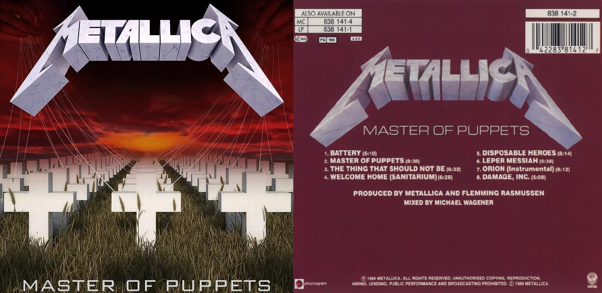
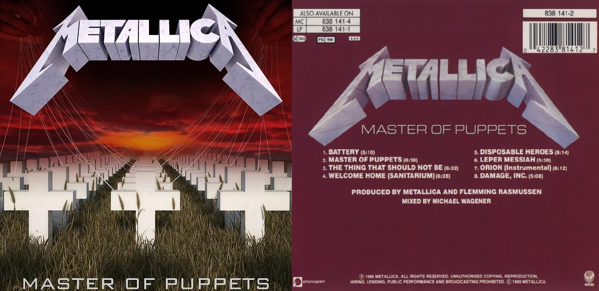

METALLICA
KILL 'EM ALL (1983).
RIDE THE LIGHTNING (1984).
Ride the Lightning es el segundo álbum de estudio del grupo musical estadounidense de thrash metal Metallica. Fue publicado el 27 de julio de 1984 bajo el sello discográfico Megaforce Records. Ride the Lightning fue certificado como álbum de oro por la RIAA el 5 de noviembre de 1987 y fue certificado disco de platino 5x el 9 de junio de 2003. El álbum es considerado como un álbum de thrash metal clásico por los fanes del grupo, críticos y miembros de Metallica y es considerado como uno de los mejores álbumes de metal de todos los tiempos.

-
LISTA DE CANCIONES
- 1-.Fight Fire with Fire
- 2-.Ride the Lightning
- 3-.For Whom the Bell Tolls
- 4-.Fade to Black
- 5-.Trapped Under Ice
- 6-.Escape
- 7-.Creeping Death
- 8-.The Call of Ktulu" (Instrumental)
MASTER OF PUPPETS (1986).
"Master of Puppets" es el tercer álbum de estudio de Metallica, lanzado en marzo de 1986 bajo Elektra Records. Fue el último álbum de estudio con la participación del bajista Cliff Burton, quien falleció en un trágico accidente poco después del lanzamiento. El álbum recibió elogios de la crítica y es considerado un clásico del thrash metal, influyente en el género. Destacan canciones como "Master of Puppets" y "Welcome Home (Sanitarium)". El álbum ha vendido más de 6 millones de copias en Estados Unidos y es reconocido como uno de los mejores álbumes de metal de todos los tiempos, ocupando el primer puesto en la lista de Metal Rules y posicionándose en el número 167 en la lista de los 500 mejores álbumes de todos los tiempos de la revista Rolling Stone. En 2016, fue preservado en la Biblioteca del Congreso de Estados Unidos por su significado cultural e histórico
 

-
LISTA DE CANCIONES
- 1-.Battery
- 2-.Master of Puppets
- 3-.The Thing That Should Not Be
- 4-.Welcome Home (Sanitarium)
- 5-.Disposable Heroes
- 6-.Leper Messiah
- 7-.Orion" (Instrumental)
- 8-.Damage, Inc.
...AND JUSTICE FOR ALL (1988).
"Freaky Styley" es el segundo álbum de Red Hot Chili Peppers, lanzado en 1985. Producido por George Clinton, destaca por su enfoque en el funk y su influencia en el movimiento funk rock de los '80. El álbum marca el regreso del guitarrista Hillel Slovak y el último de Cliff Martínez como baterista. Aunque no alcanzó el éxito comercial esperado y fue ignorado por los críticos, se convirtió en un favorito entre los fanáticos de la banda. La grabación se realizó en Detroit, donde la banda vivió con Clinton y se inspiró para crear nuevas canciones. Sin embargo, el uso excesivo de cocaína durante la grabación tuvo un impacto negativo en la salud de la banda.

-
LISTA DE CANCIONES
- 1-.Blackened
- 2-....And Justice for All
- 3-.Eye of the Beholder
- 4-.One
- 5-.The Shortest Straw
- 6-.Harvester of Sorrow
- 7-.The Frayed Ends of Sanity
- 8-.To Live Is to Die
- 9-.Dyers Eve
THE BLACK ALBUM (1991).
LOAD (1996).
"Load" es el sexto álbum de estudio de Metallica, lanzado después del exitoso "Metallica" en 1991. Producido por Bob Rock, el álbum marcó un cambio significativo en la imagen y el estilo musical de la banda. Adoptando nuevos subgéneros y profundizando en su evolución musical, Metallica se alejó de su sonido agresivo anterior, lo que causó controversia entre sus seguidores originales. Algunos los acusaron de venderse a un estilo más comercial, pero otros consideraron este cambio como una evolución hacia una música más madura y metódica. Aunque perdieron algunos fanáticos de sus inicios más agresivos, "Load" atrajo a nuevos seguidores y se convirtió en un éxito de ventas, abriendo el rock fuerte a audiencias más amplias. La portada del álbum provocó controversia, ya que se basaba en una fotografía de sangre de oveja y semen.

-
LISTA DE CANCIONES
- 1-.Ain't My Bitch
- 2-.2 X 4
- 3-.The House Jack Built
- 4-.Until It Sleeps
- 5-.King Nothing
- 6-.Hero of the Day
- 7-.Bleeding Me
- 8-.Cure
- 9-.Poor Twisted Me
- 10-.Wasting My Hate
- 11-.Mama Said
- 12-.Thorn Within
- 13-.Ronnie
- 14-.The Outlaw Torn